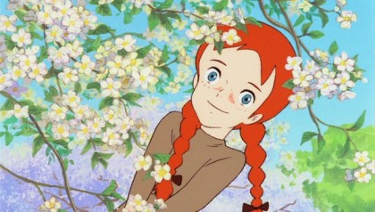

home
보물같이 빛나는 나를 찾는 시간
❤️ About Bona
🐤 Bona's Interests
🐤 Bona's Favorites
이름 : 김정화
MBTI : ISFJ
별자리 : 물고기자리

희망
이란 말은 희망 속에 있지 않다는 걸.
희망은 절망 속에서 피는
꽃
이라는 걸.
그 꽃에 이름이 있다면,
그 이름은 아마
'그럼에도 불구하고'
일 거라고.
[빨간머리 앤]
중에서...